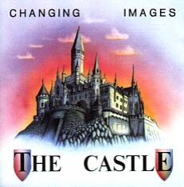
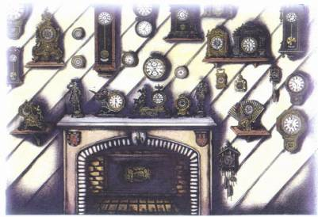
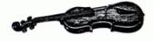
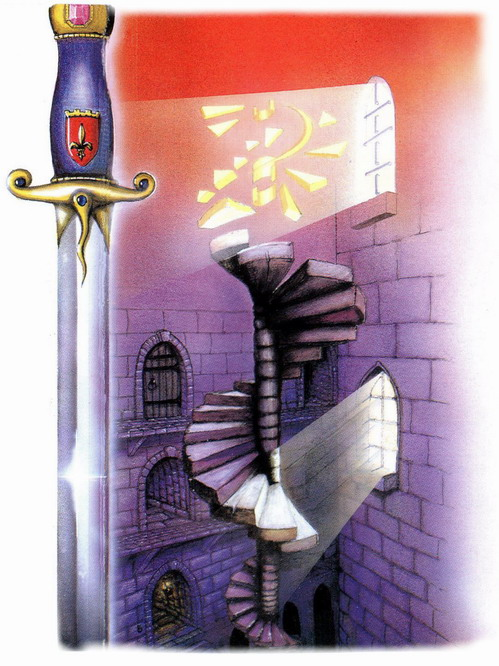

|

The tracks:
1. OUVERTURE 5´57
Total view of the castle.
2. THE ALLEY 5´02
The way up to the castle. While approaching the ancient building, your mood
changes into subtile reverence.
3. ENTRANCE HALL 6´05
Entering the castle, tuning into the miracle of ancient times and
surroundings.
4. BALLROOM 3´38
Entering the ballroom being a part of an ancient, medieval society.
5. HALL OF CLOCKS 4´56
Midnight - in a room with a
collection of old clocks awakening to life.
6. THE CRYPT 4´05
Beneath the castles chapel - the forgotten archaic crypt.
7. ANCIENT GALLERY 5´51
Passing a hallway with various paintings of ancestors.
8. THE TOWER 5´30
Being at the top of the tower where is the old alchemist laboratory and
observatory. Then, falling down a flight of winding stairs into the secret
dungeons.
9. DUNGEONS 5´00
The secret underground tunnels and torture chambers.
10. THE GARDEN 5´40
One of the tunnels is leading up to the surface - the gardens. They are full
of sunlight and flowers. There is a conjured corner...
11. THE KNIGHTS 5´16
Thrown into past. The last marching out.

|

The Castle, 1991 CD MUSEA 4044.AR
Produktion: MUSEA, France
Vertrieb: CUE-
Records (
"Old castles I always found
fascinating. Visiting some of the castles in England,
France (e.g.
in the Loire-region: Azay-le-rideau, Chambord,
Chenonceau ) or Germany,
one gets somehow the feeling of a time-warp back into the Middle Ages. Then I
try to imagine, what probably may have happened in the rooms long time ago;
how the inhabitants lived at that time, which stories and tragedies are
connected with single objects or rooms that became a legend long time ago.
Often one can settle a remarkable feeling, an atmosphere, that a room with
its arrangement emanates and which was ´stored´ for centuries. That was the
base of our conceptalbum - the Imagination of atmospheres.
Clearly, that at the beginning of
many tracks soundeffects play a role, wherefrom the music develops. Classical
- like structures have been inserted as well as elements of acoustic
instruments because they match stilistic to the concept from our point of
view. The so emerged instrumental music can be described perhaps - but
complicated as well - as a symbiosis out of symphonic-rock, electronic- and
minimal music with classical and ambient touch. Or just a sort of a
movie-soundtrack. We are aware that we sit rather between all chairs beyond
mainstream - or better: On all chairs? Finally, "The Castle" was a
conceptual project with a somewhat holistic aspect."
Martin

Equipment used for "THE
CASTLE":
Martin:
SYNTHESIZERS:
YAMAHA DX-7, TX-802-expander, RX-15 drumcomputer, CASIO CZ-101, ROLAND S-330
Sampler, R-8 rhythm composer, FORMANT-modularsystem: 5 VCO, VCFQ, 2 VCADSR,
12 dB-VCF, 24 dB-VCF, 2 VCA, 3 LFO, 2 ADSR, Resonancefilters, Noise, COM,
ENV, S&H, Ringmodulator, Waveformprocessor, 2 2*8 step
analogue-sequencers, AVC-dualquantizer, ELEKTOR-quantizer, synchronizer,
ringcounter, ADSR-controller, ROLAND MPU-101 MIDI/CV-interface.
BASS:
HOHNER PJ Fretlessbass ( Track 11)
EFFEKTS:
YAMAHA REV-7 Reverb, BOSS RCE-10 Chorus, RPQ-10 preamp+EQ, RCL-10 Compressor,
REAGUN Flanger.
COMPUTER/MIDI:
ATARI 1040 ST & MEGA ST4 + CLAB Creator, MIDI-switchbox 4x4, AKAI ME -30
P II Patch Bay, KAWAI- Q80 Sequencer.
RECORDING:
Modified SONY DTC-1000 ES DAT-recorder + APOGEE Filter 44,1 kHz, JVC XD-Z505
DAT-Recorder, ROLAND M-240 Mixer, ROLAND M-160 rackmixer, SONY TC-765
taperecorder + CN-750 HighCom, TEAC A- 3340S 4-channel recorder + 2xCN-750
HighCom, BEHRINGER 8-channelStudio DenoiserMK II, BEHRINGER Studio Exciter F,
KORG KME-56 Equalizer
Volker:
GUITARS:
CASIO MG-510 Midi-guitar, ROLAND GR 303 Guitarsynthesizer, OVATION acoustic
guitar
SYNTHESIZER:
YAMAHA DX-7, ROLAND D-110, KAWAI K1r, R-50 drumcomputer
EFFEKTS:
ZOOM 9002, SST-19 multi-effect processor, ALESIS Midiverb II; IBANEZ DM 1000
Digital Delay; MORLEY Volume, Wahwah and Fuzz; The Rat; Big Muff.

|